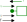

Introduction to acausal modeling for physical systems with ModelingToolkit.jl
Background
Modeling Tools Reference
The following list is a reference of the tools used for building advanced models in Julia:
- ForwardDiff.jl
- DifferentialEquations.jl
- Symbolics.jl
- ModelingToolkit.jl
- ModelingToolkitStandardLibrary.jl
Julia
This course will use Julia as the fundamental tool to solve numerical problems. ModelingToolkit.jl is a package written in pure Julia and leverages the fundamental technologies of symbolic math from Symbolics.jl, numerical solvers from DifferentialEquations.jl, and automatic differentiation from ForwardDiff.jl. To demonstrate an introduction to these technologeies, lets focus on one of the most fundamental engineering problems: the mass-spring-damper. For now, let's leave the mass out of the system to avoid the 2nd derivative term and assume a non-linear spring ($k \cdot x^{1.5}$)

This system can be represented by the ordinary differential equation (ODE):
\[d \cdot \dot{x} + k \cdot x^{1.5} = F\]
To solve this in Julia we can apply finite differencing $\dot{x}_i = \frac{x_i - x_{i-1}}{\Delta t}$ and Newton's method. Here we solve for the first time step...
using ForwardDiff
using Plots
d=1 # damping coefficient [N/(m/s)]
k=1000 # spring stiffness [N/m]
Δt=1e-3 # time step [s]
F = 100 # input force [N]
function f(xᵢ, xᵢ₋₁)
ẋᵢ = (xᵢ - xᵢ₋₁)/Δt # finite difference derivative
lhs = d*ẋᵢ + k*xᵢ^1.5 # lhs --> left hand side
rhs = F # rhs --> right hand side
return lhs - rhs # equation --> lhs = rhs, residual --> 0 = lhs - rhs
end
# Newton's Method
# first time step (i=2)
xᵢ₋₁ = 0.0
xᵢ = xᵢ₋₁ #<-- guess
g(xᵢ) = f(xᵢ, xᵢ₋₁) # g(xᵢ) turns f(xᵢ, xᵢ₋₁) into a function of only xᵢ
# Run Newton Iterations
xᵢ -= g(xᵢ)/ForwardDiff.derivative(g, xᵢ) # iteration 1
xᵢ -= g(xᵢ)/ForwardDiff.derivative(g, xᵢ) # iteration 2
xᵢ -= g(xᵢ)/ForwardDiff.derivative(g, xᵢ) # iteration 30.07815220490620071We can get the derivative for f from automatic differentiation using ForwardDiff.derivative (or using ForwardDiff.jacobian for a system of equations).
To solve for a series of time steps, we can simply update x and run again for each time step Δt. This is a simple form of the Implicit/Backwards Euler method.
tol = 1e-3
x = zeros(10)
for i=2:10
g(xᵢ) = f(xᵢ, x[i-1])
Δx = Inf
while abs(Δx) > tol
Δx = g(x[i])/ForwardDiff.derivative(g, x[i])
x[i] -= Δx
end
end
plot(x; ylabel="x [m]", xlabel="time step")DifferentialEquations.jl
For this simple problem it's easy enough to implement the Newton method and solve directly, however it's possible to instead use the solvers from DifferentialEquations.jl. To do this, we simply need to defined a NonlinearProblem by supplying the function f of the form $f(u,p)$ where:
- $u$ is the variables (scalar or vector)
- $p$ is the parameters (scalar or vector)
In this case $u$ and $p$ correspond to xᵢ and xᵢ₋₁, respectively. This is referred to as the "out-of-place" form, where each call to f allocates, it is also possible to define $f(du,u,p)$ as "in-place" form that gives $du$ as a pre-allocated memory space to mutate.
Then we can solve by specifying the method, in this case we specify NewtonRaphson to implement Newton's method.
using DifferentialEquations
p = xᵢ₋₁ = 0.0 # initial condition if i=2, x[1]=0
u0 = xᵢ = xᵢ₋₁ # guess value for x[i]
prob = NonlinearProblem(f, u0, p)
sol=solve(prob, NewtonRaphson(); abstol=tol)retcode: Success
u: 0.07815220490620071Note: we get exactly the same result for the first time step.
To solve for a series of time steps, we can now use the remake function to update the initial guess u0 and parameter p and generate an updated NonlinearProblem efficiently (i.e. with minimal allocations).
x = zeros(10)
for i=2:10
prob′ = remake(prob; u0=x[i], p=x[i-1])
sol = solve(prob′, NewtonRaphson(); abstol=tol)
x[i] = sol[]
end
plot(x; ylabel="x [m]", xlabel="time step")This approach requires the use of finite differencing and building a solution vector of solves for each time step, which was done only for demonstration purposes. Since this problem is an ODE, it can and should be solved directly with an ODE solver. To do this with DifferentialEquations.jl, we simply re-arrange the equation to solve explicitly for the derivative of $x$, giving the form $\frac{\partial u}{\partial t} = f(u,p,t)$. In this case we have
\[\dot{x}= \frac{F - k \cdot x^{1.5}}{d}\]
function du_dt(u,p,t)
F, k, d = p
x = u
return (F - k*x^1.5)/d
end
u0 = 0.0 # initial value for x
p = [F, k, d] # parameters
tspan = (0.0, 0.01) # solution time span
prob = ODEProblem(du_dt, u0, tspan, p)
sol = solve(prob)
plot(sol; xlabel="time [s]", ylabel="x [m]")In some cases, it may not be so easy to rearrange the equations in such a way to provide an ODE form. We can also solve the problem in another way: Differential Algebraic Equations (DAE) form. Here we have a mix of differential and algebraic equations. A mass matrix is used to specify which equations are differential vs. algebraic. Note that we are now solving for both $x$ and $\dot{x}$ and therefore need to supply initial conditions for each. To satisfy the system at time 0 with $x=0$, we can see that $\dot{x} = \frac{F}{d}$.
Technically the initial condition u0 can be either a guess or explicit. By default it is treated as a guess value and an algorithm is used to solve for a u0 that satisfies the system at the initial time. See the documentation for the initializealg keyword for more information.
function du_dt(u,p,t)
F, k, d = p
x, ẋ = u
eqs = [
ẋ # D(x) = ẋ
(d*ẋ + k*x^1.5) - (F) # 0 = ( lhs ) - ( rhs )
]
return eqs
end
fmm = ODEFunction(du_dt; mass_matrix=[1 0; 0 0])
u0 = [0.0, F/d] # initial value for x,ẋ
prob = ODEProblem(fmm, u0, tspan, p)
sol = solve(prob)
plot(sol; idxs=1, xlabel="time [s]", ylabel="x [m]")Now, maybe we would like to know the 2nd derivative of $x$. It should be easy enough to simply provide this in our function and solve.
function du_dt(u,p,t)
F, k, d = p
x, ẋ, ẍ = u
eqs = [
ẋ # D(x) = ẋ
ẍ # D(ẋ) = ẍ
(d*ẋ + k*(x^1.5)) - (F) # 0 = ( lhs ) - ( rhs )
]
return eqs
end
fmm = ODEFunction(du_dt; mass_matrix=[1 0 0;0 1 0;0 0 0])
u0 = [0.0, F/d, 0.0] # initial value for x, ẋ, ẍ
prob = ODEProblem(fmm, u0, tspan, p)
sol = solve(prob);
sol.retcodeReturnCode.MaxIters = 4Now we get a DtLessThanMin code, meaning the solver failed to converge. The reason for this is an index problem, our algebraic constraint equation does not use the 2nd derivative term $\ddot{x}$. To solve index problems, the algrebraic constraints must be differentiated until they contain the highest order terms. This can be done as an exercise, however, this provides a perfect segue to the tool that can make all this easier and automatic: ModelingToolkit.jl
ModelingToolkit.jl
ModelingToolkit.jl uses symbolic math from Symbolics.jl to provide automatic index reduction and problem simplification to provide the optimal form for a numerical solver. To define the same problem attempted previously in ModelingToolkit.jl, we first specify an independent variable $t$ and it's differential operator
using ModelingToolkit
@variables t
D = Differential(t)Note that t is now a symbolic term. Writing sin(t) does not compute anything, it simply represents the function symbolically. Writing D(sin(t)) then represents the derivative of sin(t) with respect to t. To compute the derivative, we can use the function expand_derivatives
D(sin(t)) |> expand_derivatives\[ \begin{equation} \cos\left( t \right) \end{equation} \]
To assemble a problem symbolically for ModelingToolkit.jl, we can define our variables and equations like
pars = @parameters F=100 d=1 k=1000
vars = @variables x(t)=0.0 ẋ(t)=F/d ẍ(t)=0.0
eqs = [
D(x) ~ ẋ
D(ẋ) ~ ẍ
d*ẋ + k*x^1.5 ~ F
]Note the variables are defined as a function of the independent variable t and given initial conditions which are captured in the variable vars. The equations are then defined using the tilde ~ operator, which represents the equation equality. This information is then fed to an ODESystem constructor and simplified using the structural_simplify function.
@named odesys = ODESystem(eqs, t, vars, pars)
sys = structural_simplify(odesys)\[ \begin{align} \frac{\mathrm{d} x\left( t \right)}{\mathrm{d}t} =& \textnormal{\.{x}}\left( t \right) \end{align} \]
As can be seen, the 3 equation system is simplified down to 1 equation. To see the solved states and equations we can use the respective functions
states(sys)1-element Vector{SymbolicUtils.BasicSymbolic{Real}}:
x(t)Now we are solving for only x(t) with the equation:
equations(sys)\[ \begin{align} \frac{\mathrm{d} x\left( t \right)}{\mathrm{d}t} =& \textnormal{\.{x}}\left( t \right) \end{align} \]
This seems correct, but what is ẋ(t)? This variable has been moved to the observables of the system, which are terms which can be computed algebraicly.
observed(sys)\[ \begin{align} \textnormal{\.{x}}\left( t \right) =& \frac{F - \left( x\left( t \right) \right)^{1.5} k}{d} \\ {\textnormal{\.{x}}}ˍt\left( t \right) =& \frac{ - 1.5 \left( x\left( t \right) \right)^{0.5} k \textnormal{\.{x}}\left( t \right)}{d} \\ \textnormal{\"{x}}\left( t \right) =& {\textnormal{\.{x}}}ˍt\left( t \right) \end{align} \]
Notice how the 2nd derivative term ẍ(t) has been automatically determined from the symbolic derivative of ẋ(t).
We can now assembly a problem and solve it. The initial conditions do not need to be supplied here because the sys contains the variable defaults from vars. The solution object sol can now be indexed symbolically from any symbol of the system regardless if it's a solved variable, observable, or even a parameter. This way, if for example doing a batch of simulations, each respective solution object can easily retrieve all respective information about the simulation.
u0 = [] # <-- used to override defaults of ODESystem variables
p = [] # <-- used to override defaults of ODESystem parameters
prob = ODEProblem(sys, u0, tspan, p)
sol = solve(prob; abstol=tol)
plot(sol; idxs=ẍ, xlabel="time [s]", ylabel="ẍ [m/s^2]")Using ModelingToolkit.jl, the solution can also be indexed by expression, for example plotting the damping and spring force components can be done as so
plot(sol; idxs=x^1.5*k, xlabel="time [s]", ylabel="force [N]")
plot!(sol; idxs=ẋ*d)Acausal - Component Based Modeling
ModelingToolkit.jl enables the application of Physical Network Acausal modeling, which is a type of modeling which is component based allowing one to build models by assembling parts together from a library. The key to how this works is thru a simple rule of how components are connected. A connection must define at minimum 2 variables (through and across see about connectors for a deeper explanation) which follows the rules:
- connections can only be made by like connectors (i.e. same pairs of through and across variables from the same physical domain)
- through variables sum to zero at connection points
- across variables are equal at connection points
Consider a simple mechanical translational system of a mass and damper. In this domain the through variable is force ($f$) and the across velocity ($v$). We can define the mass component as
\[f_{mass} = m_{mass} \cdot \dot{v}_{mass}\]
And the damper component as
\[f_{damper} = d_{damper} \cdot v_{damper}\]
Based on the rules above, connecting these 2 components together would give the following additional equations
\[\begin{aligned} 0 &= f_{mass} + f_{damper} \\ v_{mass} &= v_{damper} \end{aligned} \]
With simple substitution it can be seen that this gives the expected mass-damper system
\[m \cdot \dot{v} + d \cdot v = 0\]
Let's try this again by defining this system in ModelingToolkit.jl
Connections
To define a connection in ModelingToolkit.jl we use the @connector macro and specify the through variable with connect = Flow
@connector MechanicalPort begin
v(t)
f(t), [connect = Flow]
endComponents
To define a component, we use the @mtkmodel macro and define it's parameters, variables, connection ports, and equations. The mass component can be defined as
@mtkmodel Mass begin
@parameters begin
m = 10
end
@variables begin
v(t)
f(t)
end
@components begin
port = MechanicalPort()
end
@equations begin
# connectors
port.v ~ v
port.f ~ f
# physics
f ~ m*D(v)
end
endNow there are 2 tricky issues when defining models at the component level. First is the number of equations. How can you know if you've properly defined a base component without having the remaining parts to close the system and ensure you have a matching set of variables and equations? A general rule of thumb is that a base level component should have an equation number that matches the number of variables + connectors. The Mass component has 2 variables and 1 connector and therefore 3 equations.
The 2nd tricky issue is signs. To determine this one can draw a diagram like below. Below the port draw the across variable from left to right (positive) direction. Then draw the through variable entering the component. If the arrows point in the same direction, the connection port through variable assignment is positive, if opposing, then the sign should be negative.

Similarly the damper component is defined as below.
@mtkmodel Damper begin
@parameters begin
d = 1
end
@variables begin
v(t)
f(t)
end
@components begin
port = MechanicalPort()
end
@equations begin
# connectors
port.v ~ v
port.f ~ f
# physics
f ~ d*v
end
end
Now the Mass and Damper components can be assembled in a system and connected together (note: the connect equation). Also note the parameters v, m, and d are defined to expose the properties which can be set as keyword arguments of the same name.
@mtkmodel System begin
@parameters begin
v
m
d
end
@components begin
mass = Mass(;v,m)
damper = Damper(;v,d)
end
@equations begin
connect(mass.port, damper.port)
end
end
@mtkbuild sys = System(;v=100, m=5, d=3)
full_equations(sys)\[ \begin{align} \frac{\mathrm{d} mass_{+}v\left( t \right)}{\mathrm{d}t} =& \frac{ - damper_{+}d mass_{+}v\left( t \right)}{mass_{+}m} \end{align} \]
As can be seen we arrive at the same equation as derived previously. Now it would be easy to define a system that adds a spring, or has a series of connected masses, springs, dampers, etc.
The Damper component created previously was a little incomplete because it only had one port. In reality a damper or spring will be connected between 2 objects, for example the car frame and the wheel. Therefore a proper component will define 2 ports so that the component can be as analogous with real life as possible. In the example below the component is defined properly with 2 ports. Note the velocity of the component v is defined as a relative velocity between the 2 ports. It's easy to understand how this works if it's assumed that port_b is connected to a stationary reference frame.
@mtkmodel Damper begin
@parameters begin
d = 1
end
@variables begin
v(t)
f(t)
end
@components begin
port_a = MechanicalPort()
port_b = MechanicalPort()
end
@equations begin
# connectors
(port_a.v - port_b.v) ~ v
port_a.f ~ +f
port_b.f ~ -f
# physics
f ~ d*v
end
endNote the force is drawn now as entering the component on both sides. For port a the directions align, but for port b the directions are opposing, requiring a sign change: port_b.f ~ -f

Now we can do the same for the spring component. Note that the spring is of course very similar to the damper, but now we need a relative position. This can be obtained by integrating the port velocities, but how do we integrate in ModelingToolkit.jl? We want to write the equation
\[x = \int v \space \partial t\]
But we know that this is also true
\[\frac{\partial x}{\partial t} = v\]
In ModelingToolkit therefore we can "integrate" by moving the differential to the appropriate side of the equation.
@mtkmodel Spring begin
@parameters begin
k = 100
end
@variables begin
x(t)
v(t)
f(t)
end
@components begin
port_a = MechanicalPort()
port_b = MechanicalPort()
end
@equations begin
# derivatives
D(x) ~ v
# connectors
(port_a.v - port_b.v) ~ v
port_a.f ~ +f
port_b.f ~ -f
# physics
f ~ k*x
end
end
One thing to consider now in the Spring component is the meaning of the spring stretch/compression variable x. What does it mean if this variable is positive or negative? It's important to note when reviewing the model output that a positive x means the spring is compressed and vise versa for a negative x.
Now, if we want to create a full mass-spring-damper system with our new Damper and Spring components, we need to create some boundary conditions, such as a stationary reference and an input force. Creating a stationary reference in acausal modeling is a bit tricky. We know that the velocity should be set to zero, as it's stationary. But what should the force be? Thinking about Newton's principles, every force on a non-moving object is met with an equal but opposite force. Therefore we add a variable f to represent this force, which will be part of the solved system solution.
@mtkmodel Reference begin
@parameters begin
end
@variables begin
f(t)
end
@components begin
port = MechanicalPort(;f,v=0)
end
@equations begin
# connectors
port.v ~ 0
port.f ~ -f
end
endNote the sign convention port.f ~ -f. This is maybe not expected. To understand why a negative is needed here is because this component is different from the others, there is no physics involved. The component is instead only a boundary condition, therefore force should be leaving the component rather than entering.

Finally, considering an input force, we can imagine this to be an invisible hand that pushes with a constant force. This invisible hand will move with the port with velocity v. We don't know this velocity, it's a variable that will part of the solved system solution.
@mtkmodel ConstantForce begin
@parameters begin
f
end
@variables begin
v(t)
end
@components begin
port = MechanicalPort()
end
@equations begin
# connectors
port.v ~ v
port.f ~ -f
end
endAs with the Reference component, the force is a boundary condition and is leaving the component rather than entering, giving the sign convention port.f ~ -f.

Now let's assemble a mass-spring-damper system with the full collection of components.
@mtkmodel System begin
@parameters begin
v=0
x=0
m=100
d=10
k=1000
f=1
end
@components begin
mass = Mass(;v,m)
damper = Damper(;v, d)
spring = Spring(;v, k, x)
ref = Reference()
force = ConstantForce(;v,f)
end
@equations begin
connect(mass.port, damper.port_a, spring.port_a, force.port)
connect(damper.port_b, spring.port_b, ref.port)
end
end
@mtkbuild sys = System()
prob = ODEProblem(sys, [], (0, 10))
sol = solve(prob)
plot(sol)There's a couple things we can do now to ensure the system is correct. First, we can look at the equations.
full_equations(sys)\[ \begin{align} \frac{\mathrm{d} mass_{+}v\left( t \right)}{\mathrm{d}t} =& \frac{force_{+}f - damper_{+}d mass_{+}v\left( t \right) - spring_{+}k spring_{+}x\left( t \right)}{mass_{+}m} \\ \frac{\mathrm{d} spring_{+}x\left( t \right)}{\mathrm{d}t} =& mass_{+}v\left( t \right) \end{align} \]
The first equation (after re-aranging) it can be seen is the classic mass-spring-damper equation.
\[m \cdot \ddot{x} + d \cdot \dot{x} + k \cdot x = f\]
This way we know all the signs and equations are set correctly. Let's also check the Reference component sign, which should give an equal but opposite force to the system connected to it.
plot(sol; idxs=sys.ref.f)
plot!(sol; idxs=sys.spring.f + sys.damper.f)Additionally it's easy enough in this case to re-construct the problem directly and solve to check the result.
vars = @variables x(t)=0 dx(t)=0 ddx(t)=0
pars = @parameters m=100 d=10 k=1000 F=1
eqs = [
D(x) ~ dx
D(dx) ~ ddx
m*ddx + d*dx + k*x ~ F
]
@named odesys = ODESystem(eqs, t, vars, pars)
sys = structural_simplify(odesys)
prob = ODEProblem(sys, [], (0,10))
sol = solve(prob)
plot(sol)Systems and Sub-Systems
Acausal modeling allows for an "object-oriented" like system that can organize models with hierarchy. Let's say for example we want to make a part that is a collection of the mass, spring, damper into a single system. The MassSpringDamper component below shows how this is possible. As can be seen, this is nearly the same system we generated previously, except no boundary conditions are given, instead 2 MechanicalPort's are added and connected to the component parts. These connection points are now exposed and can be connected to other components.
@mtkmodel MassSpringDamper begin
@parameters begin
m
k
d
v
x
end
@components begin
port_a = MechanicalPort()
port_b = MechanicalPort()
mass = Mass(;m,v)
damper = Damper(;d,v)
spring = Spring(;k,v,x)
end
@equations begin
connect(mass.port, damper.port_a, spring.port_a, port_a)
connect(damper.port_b, spring.port_b, port_b)
end
endAs an example, the MassSpringDamper component can be connected in series to make a complex system. One can imagine then how this enables easy construction of complex models that can be quickly modified, extremely useful for the application of model based design.
@mtkmodel System begin
@parameters begin
v = 0
x = 0
end
@components begin
msd1 = MassSpringDamper(;m = 10, d = 1, k = 1000, v, x)
msd2 = MassSpringDamper(;m = 20, d = 2, k = 2000, v, x)
msd3 = MassSpringDamper(;m = 30, d = 3, k = 3000, v, x)
ref = Reference()
force = ConstantForce(;f=1,v=0)
end
@equations begin
connect(force.port, msd1.port_a)
connect(msd1.port_b, msd2.port_a)
connect(msd2.port_b, msd3.port_a)
connect(msd3.port_b, ref.port)
end
end
@mtkbuild sys = System()
prob = ODEProblem(sys, [], (0, 2))
sol = solve(prob)
plot(sol; idxs=[sys.msd1.spring.x, sys.msd2.spring.x, sys.msd3.spring.x])
Practice Exercise
The current solution shows how the springs are compressed. How can the model be updated to show the absolute positions of the springs? For example, if each spring starts at an unstreched length of 10mm, connected together they will form a collection of 30mm with masses inbetween. Update the model to show the absolute position of each mass in time.